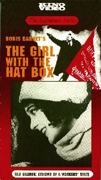
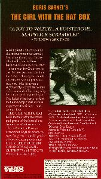
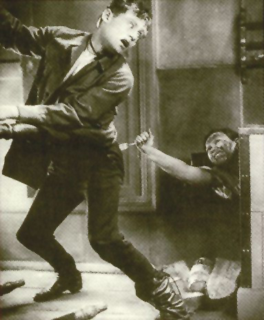

My Aunt, Yeva Milyutina
Ева Милютина
For many years I had known that one of my mother's sisters, Yeva, was once an actress in Russia. My mother and her siblings (one brother Abe, and six sisters; Yeva, Reva, Rachel, twins Luba and Lola, and Anna), at one point in their youth, spent some time in Russia (Odessa, Ukraine), and while my mom came to the U.S. when she was around 15 years old (she arrived in the U.S. on December 24, 1930, maybe along with her other sisters), Yeva, the oldest of the sisters, stayed behind. I don't know much more about the story of my mom's family's early migration around Europenote, but during a conversation with my cousin Gloria, the topic of our movie star aunt came up. Gloria knew our Aunt Yeva's Russian last name (it turned out, it wasn't the same as my mother's American maiden name), so I decided to start from there to see if I could find out more about her.
I figured the Internet Movie Database would be a good place to start, and, sure enough, I found a not very detailed entry for Yeva Milyutina there. I wasn't able to track down any videos of her movies on the Internet, so I did a Google search for department of russian film. After picking out a few names from the search results and sending off a few quick e-mails, I got a reply from Professor Vance Kepley, Jr., the Chair of the Department of Communication Arts at the University of Wisconsin in Madison who recommended I try Facets Multimedia in Chicago where he thought I might be able to obtain a copy of The Girl With the Hat Boxnote (in Russian, Девушка с Коробкой), one of Yeva's few movies.
Sure enough (and quite surprisingly!), Facets Multimedia had a copy of The Girl With the Hat Box on video. I ordered it and within a few weeks, it arrived in the mail. While Yeva had only a small part in this 67 minute 1927 silent movie, maybe only appearing on screen for a total of five minutes, it was a real thrill to see this long, lost aunt of mine! She looked a lot like I would have expected her to look - a lot like my mother and several of her sisters. I only wish my mother was here today to see it.
Here's a summary of the plot, from Wikipedia:
Natasha and her grandfather live in a cottage near Moscow, making hats for Madame Irène. Madame and her husband have told the housing committee that Natasha rents a room from them; this fib gives Madame's lazy husband a room for lounging. The local railroad clerk, Fogelev, loves Natasha but she takes a shine to Ilya, a clumsy student who sleeps in the train station. To help Ilya, Natasha marries him and takes him to Madame's to live in the room the house committee thinks is hers. Meanwhile, Madame's husband pays Natasha with a lottery ticket he thinks is a loser, and when it comes up big, just as Ilya and Natasha are falling in love, everything gets complicated...
Here are a few screen shots of Aunt Yeva from the movie. If you knew my mom, you can see the resemblance. At the bottom of this page, there is a link to the movie itself where you can see Yeva in action.
In The Girl With the Hat Box, Yeva plays a sort of clownish servant girl named Marfushka, and, as I already mentioned, only appears briefly in it. However, the fact that this movie was even put out on video with English subtitles makes me think it has some importance in the history of Russian film, most likely because it was directed by Boris Barnet, apparently a famous and well-respected Russian director. She also appeared in a few other films (here are a couple: Schumi, The Town! (Шуми, городок!) and Tailor From Torzhok (Закройщик из Торжка), but no one I talked to seemed to think they are available through normal video channels. (One of the replies I received suggested doing an Internet search using a Russian search engine, but that's far beyond my linguistic capabilities.) Note: In June of 2014, I did some more exploring and found this! Be sure to check this out!
{kind=link}
{kind=link}
I later learned from Gloria that Yeva was mostly a theater actress, and, in fact, retired from the theater in Russia to an actors' retirement home somewhere just outside of Moscow. She came to America just once to visit, but didn't like it and quickly returned to Russia. At one point, she wrote to one of her sisters here in America asking her to come and visit her, but, alas, none of the sisters ever went.
Here is the video box's front and back (click on them to see them full size.) Yeva is not
credited on the box (her name does appear in the movie's opening credits), however, that's
her on the
back, sticking a fork into the backside of one of the other characters!
The story itself is not bad, sort of what you'd expect in a typical '20s silent movie, with
some interesting glimpses into Russian life under the communists appearing throughout the
entire film. Seeing Russia in the '20s - the people, the scenery, the snow covered streets of Moscow
and the surrounding countryside, and especially my aunt Yeva - made this a real pleasure for me to
watch and a treasure for me to own and share with the rest of the family.
{kind=link}
 |
 |
{kind=link}
{kind=link}
The comments on the back of the video box read:
|
Boris Barnet's THE GIRL WITH THE HAT BOX "A JOY TO WATCH...A BOISTEROUS, SLAPSTIC SCRAMBLE!" - THE NEW YORK TIMES |
|
| A completely hilarious and charming romantic comedy featuring the extraordinary talents of director Boris Barnet and actress Anna Sten - later a star for Goldwyn in the thirties. Anna works in a hat shop - sharing her small apartment with a penniless student. She is given a supposedly worthless lottery ticket instead of her wages by her unscrupulous employer. The ticket wins her a fortune and a madcap chase ensues to possess the ticket - and Anna's love. THE GIRL WITH THE HAT BOX moves with the speed and grace of the best of the American silent comedies. Boris Barnet, a Russian director of English ancestry, was the great comedic genius of Soviet cinema with such films as THE HOUSE ON TRUBNAYA SQUARE, OUTSKIRTS, and THE GIRL WITH THE HAT BOX. |
 THE GIRL WITH THE HAT BOX (Devushka s korobkoi) 1927 67 minutes B&W. A Mezhrabpom-Russ Production Russian intertitles with English subtitles Orchestral Score Restored: Gosfilmofond Director: Boris Barnet Scenario: Valentin Turkin & V. Shershnevich With Anna Sten, Vladimir Fogel, Pavel Pov, Ivan Koval-Samborsky, and Serafima Birman Decor: Sergei Kozlovsky Photography: Boris Frantisson & B. Filshin ©1991 KINO INTERNATIONAL |
And finally, here's the complete 1 hour and 8 minute black and white silent movie (with English subtitles) from 1927, The Girl With The Hat Box, where my aunt (at age 34) plays Marfushka, a somewhat comical servant girl.
She appears only briefly in this film:
- around 10:37, on and off screen until about 14:41, with a very interesting appearance starting at 11:59 for about a half minute
- around 24:45 just for a couple of seconds
- around 27:31, on and off screen until about 31:26
- around 39:49, only till about 40:15, but probably the best shots of her
- around 49:44 just for an instant
- around 59:19, again, just for a few seconds
- around 1:02:04 (that's her with the fork!), her final appearance, watch until at least 1:02:30
Enjoy!
Update:
In November of 2015, I started poking around the Internet for some more of Yeva's stuff, and I found this movie, Schumi, The Town (Шуми, городок), a 1939 film with Yeva, again in a minor role.
And this movie, We Met Somewhere (Мы с вами где-то встречались), a color movie made in 1954 when she was 60 or 61. She comes in late in this film, with a few short scenes at 1:06:03, 1:09:38, and on and off screen from 1:15:13 for the next two minutes.
It appears that most of Yeva's roles were very minor, appearing on screen in only a few short scenes. (Maybe that's why she switched to live theater.)